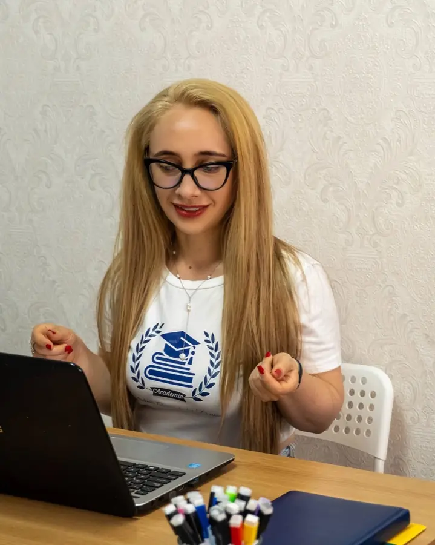

About Academia Studium Generale
Studium generale was the medieval name for a school open to anyone who came to learn, no matter where they were from. We kept the name because it describes exactly what we set out to build: a place of knowledge, full of heart, light and care.
How it started
Academia Studium Generale began as a timid thought, 20 years ago, when I left for Greece on a merit scholarship. I completed my degree and my master's there, and for years I taught at some of the largest multinationals, at the Romanian School in Athens, and at private language schools.
So when I came back to Romania, I already knew what my dream would look like: a place of knowledge, full of heart, light and care.
Alongside our students is a team of well trained teachers and instructors, people who do not just pass on information, but know how to open the door to knowledge and awaken the desire to learn.
Because we want every child to leave here not only with better grades, but with a curious mind, with confidence in their own abilities, and with the tools they need to become an independent, balanced and capable adult.
We do more than we promise, and extraordinary results remain our greatest reward and the reason we know for certain that every effort we make is worth it.
Denisa
Building the future through education!
Why one to one or a maximum of three
Three is the number at which a session stays a conversation. Every student gets to speak, to make mistakes in front of the other two, and to be corrected on the spot. At four, someone stays quiet. At ten, three stay quiet all the time and become invisible, exactly what happens at school, only more expensive.
Anyone who wants to can work one to one. It is not a marketing figure: if a group is full, another one opens or you go on a waiting list. We do not add a fourth chair.

What a year looks like
September: the placement session
A 50 minute session, free of charge. It is not an exam and no grade is given: we just need an honest picture of what the student knows, so that preparation does not start from a guess.
October–May: the parent stays informed
After every session you know what was covered and what did not go well, and questions do not wait for a set date. At the end of every month a report goes to the parent: what was covered, the percentage of the curriculum completed, where things are weak, and what comes next.
Mock exam under real conditions
Timed conditions, exam style questions, the official grading scheme. The grade goes into the report, so you see the actual trend, not just an impression.
June: the exam
The last two weeks are only review and past exam papers, no new material. No one learns a new chapter four days before the Baccalaureate.
What we do not do
- We do not stop at grades. We want every child to leave with a curious mind and confidence in their own abilities.
- We do not keep a student on a package if there is nothing left for them to gain. We are the first to tell you.
- We do not change teachers mid-year.
- We do not mix students from different grades into one group just to fill seats.
Where to find us
Sessions are held downtown or online, on the same platform all year. The online ones are not a backup option: they follow the same plan, the same materials, and the same report.
·